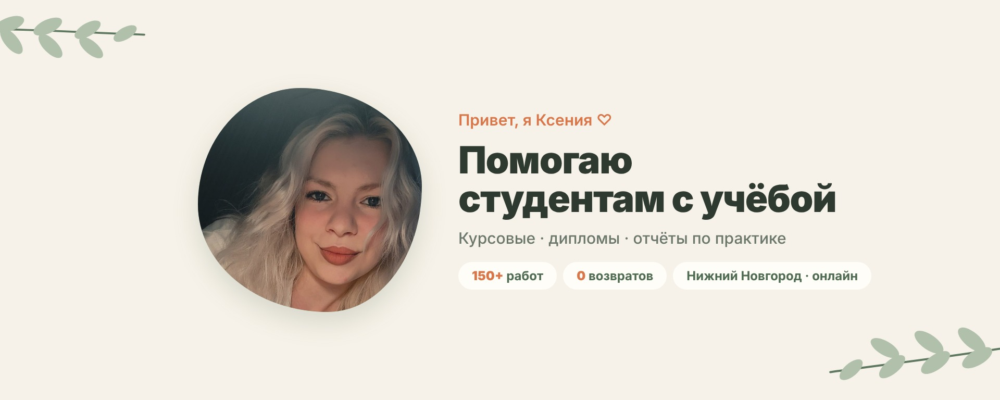
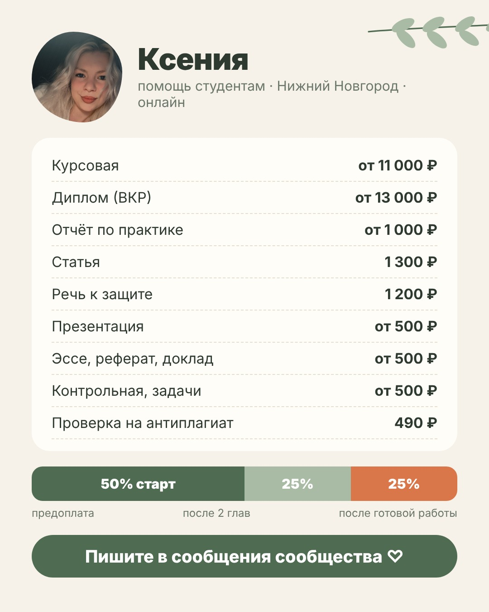

Делайте шаги по порядку. Где нужен текст, нажмите «Скопировать» и вставьте его в ВК. Картинки сохраните из чата с Claude (я прислала их файлами) или нажмите на картинку здесь и удерживайте.
Настраивать удобнее с компьютера на vk.com: там больше настроек. В приложении ВК всё то же самое находится через ⚙️ «Управление». Если какой-то пункт называется чуть иначе, пришлите скриншот, подскажу.
Откройте Сообщества → Создать сообщество. Тип выберите «Бизнес» (если такого нет, то «Тематическое сообщество»). Тематика: «Образование». Название вставьте из шага 2. Нажмите «Создать».
Название попадает в поиск ВК, поэтому в нём есть слова, которые ищут студенты.
Ксения | Помощь студентам | Курсовые, дипломы
Адрес: Управление → Основная информация → Адрес страницы. Попробуйте по очереди, какой свободен:
ksenia_study_nn
Если занят: ksenia.study, kseniastudy, ksenia_kursovye
Управление → Основная информация → Описание
Привет! Я Ксения, уже 3 года помогаю студентам с учёбой ☺️ 📚 Курсовые, дипломы, отчёты по практике, статьи, презентации, речь к защите, эссе, рефераты, контрольные 🎓 Экономика, бухучёт, финансы, менеджмент, маркетинг, реклама и PR, управление персоналом, ГМУ, логистика, туризм, лингвистика, психология, педагогика, право, история, литература, философия, культурология, экология. Сложные технические работы не беру. ✅ 150+ выполненных работ, 0 возвратов ✅ Сдаю по главам, чтобы научрук видел прогресс ✅ Правки бесплатно ✅ Проверка на антиплагиат, часто в подарок ✅ Без посредников, работаю сама 💳 Оплата частями: 50% предоплата, 25% после двух глав, остаток после готовой работы 📍 Нижний Новгород и онлайн по всей России ✍️ Напишите в сообщения сообщества тему, предмет и срок, и я скажу цену
Статус: на главной странице сообщества нажмите под названием «Изменить статус» (или «Краткое описание»).
Курсовые, дипломы, отчёты · 150+ работ · сдаю по главам ♡
Когда заработает сайт, добавьте в конец описания строку «🧮 Рассчитать стоимость: ссылка на сайт».
Аватар: на странице сообщества нажмите на круглое фото → «Загрузить» → файл vk-avatar.jpg. Круг выставьте по лицу.
Обложка: Управление → Основная информация → Обложка сообщества → Загрузить → файл vk-oblozhka.jpg. Важное стоит в центре, поэтому на телефоне ничего не обрежется.

Управление → Разделы. Включите:
Фото, аудио, видео, статьи, мероприятия можно выключить, чтобы не было пустых разделов.
Управление → Сообщения → «Сообщения сообщества»: включить. В поле «Приветствие» вставьте:
Здравствуйте! Я Ксения ☺️ Напишите, пожалуйста: 1) что нужно сделать (курсовая, диплом, отчёт…) 2) предмет и тему 3) срок сдачи 4) методичку или требования, если есть Отвечу и скажу цену 🥰
Там же включите «Кнопку действия» (если есть) и выберите «Написать сообщение». Когда заработает сайт, можно поменять на «Открыть сайт».
В Управление → Контакты добавьте себя: должность «Ксения, отвечу в сообщениях».
На странице сообщества: Услуги → Добавить услугу. Для каждой: загрузите картинку, вставьте название, описание и цену. Категория: «Образование» или «Услуги».
Обсуждения → Создать тему.
Отзывы 💛
Здесь можно оставить отзыв о работе со мной ☺️ Напишите, что за работа была (курсовая, диплом, отчёт) и как прошла сдача или защита. Можно прикрепить скриншот оценки. Спасибо, что доверяете мне свою учёбу 🥰
Сразу после этого напишите прошлым клиентам (Наире, Кристине, Алине) и попросите оставить пару слов. Текст для них есть в шаге 11.
Опубликуйте запись с картинкой vk-zakrep.jpg, потом на записи нажмите ⋯ → Закрепить.

Давайте знакомиться ☺️ Я Ксения, помогаю студентам с курсовыми, дипломами и отчётами по практике. За 3 года сделала больше 150 работ, и ни одного возврата денег. Как я работаю: 1️⃣ Вы пишете тему, предмет и срок (и методичку, если есть) 2️⃣ Я называю цену и срок. Обычно 5–7 дней, диплом около 14 3️⃣ Сдаю по главам: вы показываете научруку, я вношу правки 4️⃣ Правки бесплатно, проверка на антиплагиат часто в подарок 💳 Оплата частями: 50% предоплата → 25% после двух глав → остаток после готовой работы Цены на картинке 👆 Точную цену скажу, когда увижу тему. ✍️ Пишите в сообщения сообщества. Отвечаю сама, без посредников 🥰
Выкладывайте по одному через 1–2 дня, чтобы сообщество не выглядело пустым. Клипы загружайте от имени сообщества: Клипы → Создать клип, музыку добавьте из библиотеки ВК.
Старосты, вы лучшие 😅 Отметьте свою в комментариях 👇 #курсовая #студенты #сессия #староста #нижнийновгород
Почему я сдаю диплом по главам, а не целиком в конце 📚 Самое страшное для студента — получить готовую работу за неделю до защиты и узнать, что научрук хотел «совсем другое». Поэтому я работаю так: ▫️ пишу главу и отправляю вам ▫️ вы показываете научруку ▫️ я вношу правки и только потом иду дальше Так к концу работа уже согласована, и никаких сюрпризов перед защитой ☺️ А вам научрук возвращал работу на доработку? Сколько раз? 👇
Пиши счёт в комментарии: 0, 1, 2 или 3? 👇 #курсовая #студенты #тест #угадай #нижнийновгород
До сессии около месяца 🙈 Что стоит сделать уже сейчас, чтобы в декабре не паниковать: 1. Узнать точные сроки сдачи курсовых и отчётов по практике 2. Найти методичку (да, ту самую, которая была «где-то в сентябре») 3. Согласовать тему с научруком, если ещё нет 4. Проверить, какой процент оригинальности требует кафедра Если что-то из этого уже горит, пишите в сообщения. Помогу с курсовой, отчётом или подготовкой к защите ☺️ Сохраните пост, чтобы не потерять 📌
Только после того, как Наира разрешит. Прикрепите картинку или просто текст.
Лучшие сообщения в моём телефоне 🥹 «Ксюша, привет ❤️ я защитилась на 5!!! Спасибо тебе огромное, дорогая. Благодаря твоей крутой работе ❤️» Ради таких сообщений я и работаю ☺️ Наира, ещё раз поздравляю! Если у вас скоро защита или сдача курсовой, пишите, помогу 💛
В сообщениях сообщества (на компьютере) есть кнопка «Шаблоны»: сохраните туда эти ответы, чтобы не печатать каждый раз. Если кнопки нет, держите их в заметках телефона.
Курсовая от 11 000 ₽, диплом от 13 000 ₽, отчёт по практике от 1 000 ₽. Точную цену скажу, когда увижу тему и методичку ☺️
Оплата частями: 50% предоплата, 25% после двух глав и остаток после готовой работы. Правки входят в стоимость 🥰
Обычно курсовая 5–7 дней, диплом около 14 дней. Если срочно, напишите срок, посмотрю, смогу ли быстрее ☺️
Оплата пришла, спасибо большое ☺️ Если будут какие-то новые данные или вопросы, пишите 🥰
Спасибо, что выбрали меня ☺️ Если придут правки, пишите, всё исправлю. Буду очень благодарна, если оставите пару слов в обсуждении «Отзывы» в моём сообществе: vk.com/ksenia_study_nn 🥰
В последнем шаблоне замените адрес, если в шаге 2 получился другой.
Завела отдельное сообщество про свою работу ☺️ Там цены, отзывы и смешные клипы про студентов. Подписывайтесь, а если у вас или знакомых горят курсовые и дипломы, пишите 💛